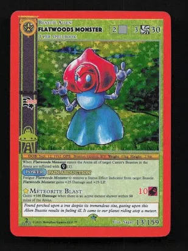
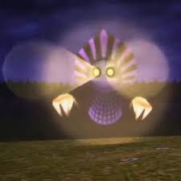
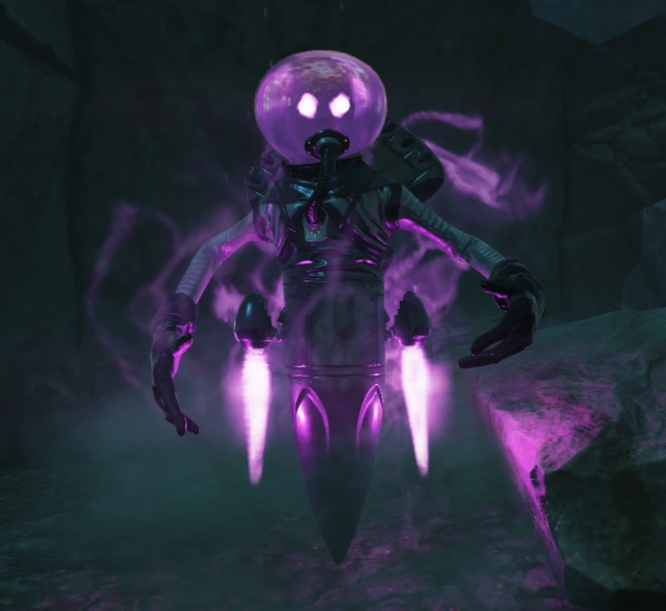
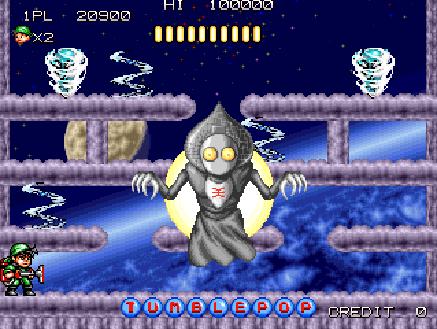
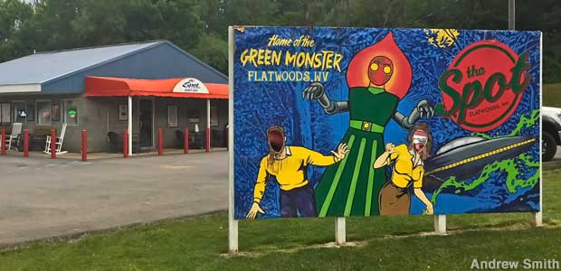
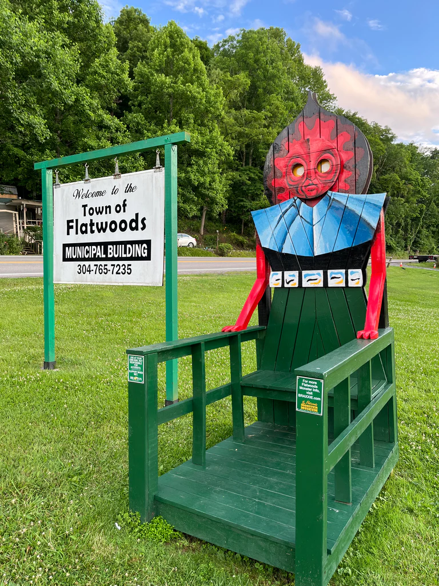

In Media
The Flatwoods Monster didn’t disappear after that night in 1952—it evolved. Over time, the creature has taken on a life of its own, becoming a lasting symbol in pop culture and creative media. Its unusual design—a towering figure with a spade-shaped head and glowing eyes—has inspired artists, storytellers, and developers for decades.
From Legend to Pop Culture
The creature’s strange appearance made it easy to reimagine in different forms. From cards to games, the Flatwoods Monster became more than just a local story. It became a recognizable figure connected to mystery, folklore, and creativity.

His Influence
The creature has appeared in numerous video games, often reimagined as a mysterious or otherworldly figure. One of its most recognizable modern appearances is in Fallout 76, where the Flatwoods Monster is portrayed as a glowing being with psychic-like abilities. Beyond video games, the monster has also been featured in trading card games, documentaries, and illustrated works.



His Presence Today
More than just a cryptid, the Flatwoods Monster has become a creative icon. Its legacy shows how a single unexplained event can spark decades of imagination, influencing how we design creatures, tell stories, and explore the unknown. The monster continues to live on—not just in Flatwoods, but in the worlds we create.

